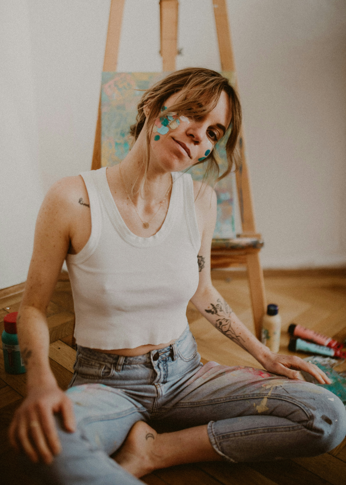
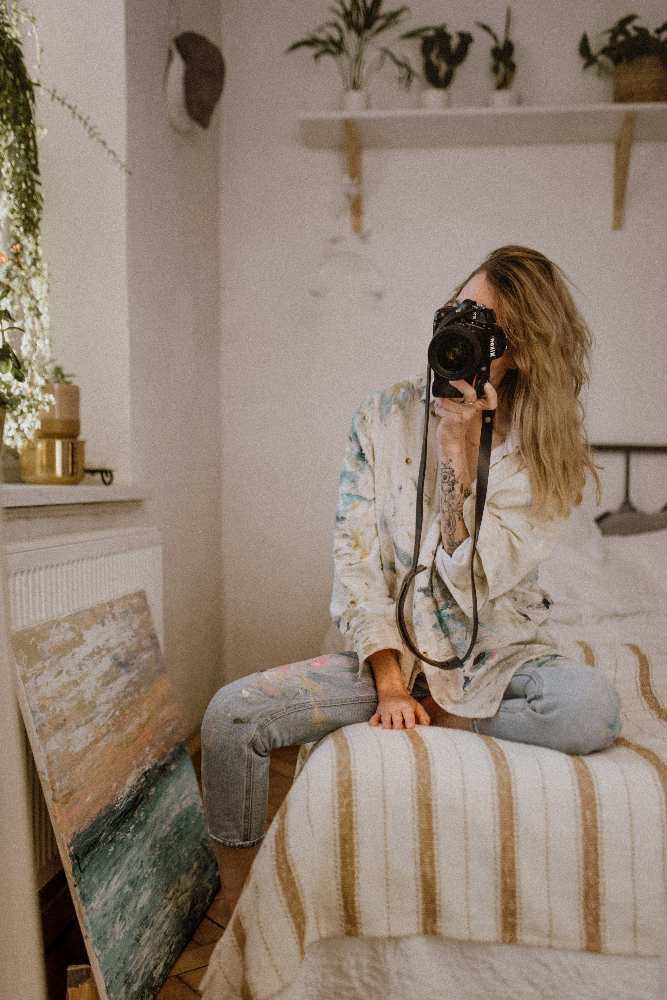

It completely shifted my focus toward the details that truly matter. Before becoming a mom, I used to chase technical perfection. Now, I chase raw emotion—a tender touch, a tired but deeply loving glance, or tiny feet tucked into your arms. I know firsthand how incredibly fast this time flies, and my goal is to freeze those fleeting, authentic moments for you.
ABOUT ME
Hello, my name is Patrice - I'm your Photographer in Grand Island.
In my day-to-day life, I'm a mum to two absolutely adorable and lovely little girls. I love creating images and capturing moments through the lens of my camera.

"Patrice's dedication is evident from the very first seconds you step into the studio - it's magic."

YOUR JOURNEY AS A MOTHER & PHOTOGRAPHER
As a mother, I know that getting packed up and going to a studio can be stressful for both babies and parents. True magic doesn't happen in front of a paper backdrop; it happens within your own four walls, where your family feels safest and most comfortable. I want to capture your real life—your morning coffee, your chaos, and your sofa cuddles.
It gives me an endless supply of patience and empathy. I don't get stressed by toddler tantrums, a crying newborn, or spilled milk—I have been through it all! I deeply understand the exhaustion of new parents. Our sessions are never rushed; we move entirely at your baby's pace, completely free of pressure.